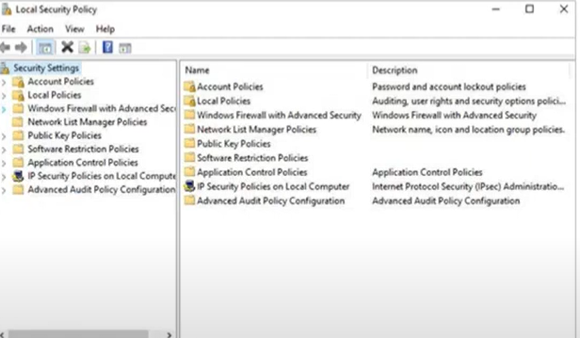
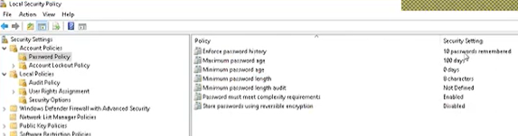

Local Security Policy
Local Security Policy, Windows işletim sisteminde kullanıcıların, grupların ve bilgisayarların güvenlik ayarlarını yapılandırmak için kullanılan bir araçtır. Bu araç, ağ politikaları veya diğer yönetim politikaları tarafından uygulanmayan, yalnızca yerel bilgisayarda uygulanabilen güvenlik politikaları oluşturmanızı sağlar.
Local Security Policy, bir bilgisayarın fiziksel güvenliği, ağ trafiği, kullanıcı hesapları, parolalar ve daha birçok güvenlik öğesi gibi farklı konularda yapılandırılabilir. Bu politikalar, bir ağ yöneticisi veya sistem yöneticisi tarafından belirlenen standartlara uygun şekilde yapılandırılmalıdır.

Burada bir parola için oluşturulmuş olan Security Policy görmektesiniz.Girilecek olan parola son 10 parola ile aynı olamaz.
- Parola 100 gün için geçerlidir.
- Minimum parola uzunluğu 8 karakterli olmak zorundadır.
- Büyük harf ve rakam olmak zorunda
- Geri dönüştürülebilir bir algoritma oluşturma seçeneği ise bazı toollar ile parolanızın geri dönüştürülemez bir algoritma ile oluşturulmasını sağlar
